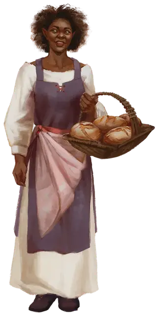

Обыватель конструкт
Constructed Commoner
Средний Конструкт

Класс Доспеха 15 (природный доспех)
Хиты 6 (1к8 + 2)
Скорость 25 футов
| мод | спас | ||
|---|---|---|---|
| СИЛ | 10 | +0 | +0 |
| ЛОВ | 10 | +0 | +0 |
| ТЕЛ | 15 | +2 | +2 |
| мод | спас | ||
|---|---|---|---|
| ИНТ | 10 | +0 | +0 |
| МДР | 10 | +0 | +0 |
| ХАР | 10 | +0 | +0 |
Иммунитет к урону яд
Иммунитет к состояниям отравление, истощение
Чувства пассивное Восприятие 10
Языки Общий
Опасность 0
Бонус мастерства +2
Особенности
Неестественная природа. Обывателю не нужен воздух, еда, питье или сон, и он не получает никаких преимуществ от короткого или продолжительного отдыха. Когда его хиты опускаются до 0, он становится безжизненным объектом.
Действия
Дубинка. Рукопашная атака оружием: +2 к попаданию, досягаемость 5 фт., одна цель. Попадание: дробящий урон 2 (1к4)
Описание
Чтобы заселить демиплан, не подвергая опасности ни в чем не повинных людей, Арфисты создали конструктов из деревянных манекенов, которые действуют как жители деревни. Магия делает их похожими на людей из плоти и крови, и конструкты ведут себя убедительно, как настоящие гуманоиды, которые просто живут своей жизнью в Долине Глициний. Заклинание обнаружение магии [detect magic] не раскрывает их истинную природу, поскольку каждый конструкт защищен заклинанием, из-за которого он кажется немагическим.
Хотя конструкты могут физически взаимодействовать с окружающей средой и вести длительные беседы, существует несколько ключей к разгадке их истинной природы. Персонаж, который внимательно наблюдает за одним или несколькими обывателями и преуспевший в проверке Мудрости (Восприятие) Сл 15, замечает слабые щелчки, когда обыватели касаются твердой поверхности. К тому же деревенские жители холодны на ощупь, в чем можно убедиться только при физическом контакте. Преуспевший в проверке Мудрости (Проницательность) Сл 15 персонаж также заметит, что если жителей деревни спросить о чем-либо за пределами Долины Глициний или об их индивидуальных талантах, они быстро меняют тему на светские разговоры о погоде или сплетнях, и всегда говорят на Общем, несмотря на своё происхождение.
Обыватели-конструкты не истекают кровью и не чувствуют боли, как гуманоиды из плоти и крови. Если очки здоровья деревенского жителя снижаются до 0, раскрывается его истинная форма: безжизненный деревянный манекен. В одночасье манекен исчезает, и демиплан генерирует нового жителя деревни, который через несколько дней занимает место и роль «убитого» жителя в деревне. Если манекен разрушен или превращен в пепел, его не заменяют, и население деревни навсегда уменьшается на единицу.